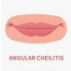

Perleche
Rx
1.Cream Miconazole N=1 q12h
Or Oint Clotrimazole 1% N=1 q12h
2.Oint Betamethasone 0.1% N=1 q12h
Or Cream Hydrocortisone 1% N=1 q12h
3.Oint Vit A-D N=1 PRN
نکته: شقاق لب به علت خشکی، کمبود ویتامین ، علل دارویی، تروما میتونه باشد.
نکته: پماد ها را با فاصله زمانی از هم مصرف کنند.
نکته: درصورت وجود عفونت آنتی بیوتیک موضعی (موپیروسین) یا خوراکی(سفالکسین) تجویز کنید.
1️⃣ درماتیت تماسی
2️⃣ درماتیت آتوپیک
3️⃣ درماتیت سبورئیک
4️⃣ آسیب شیمیایی
5️⃣ تروما
Erosive oral lichen planus 6️⃣
Impetigo 7️⃣